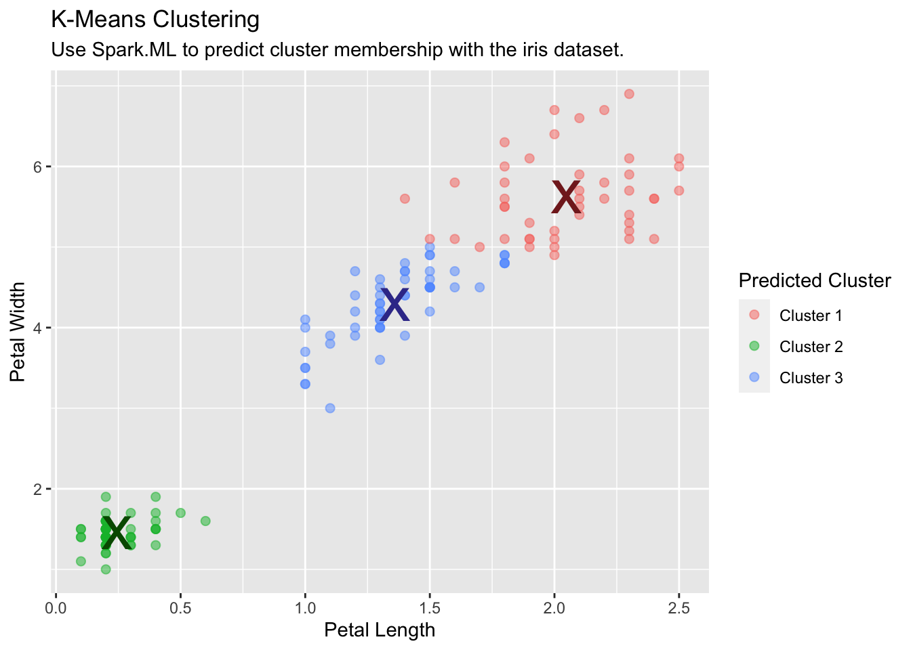
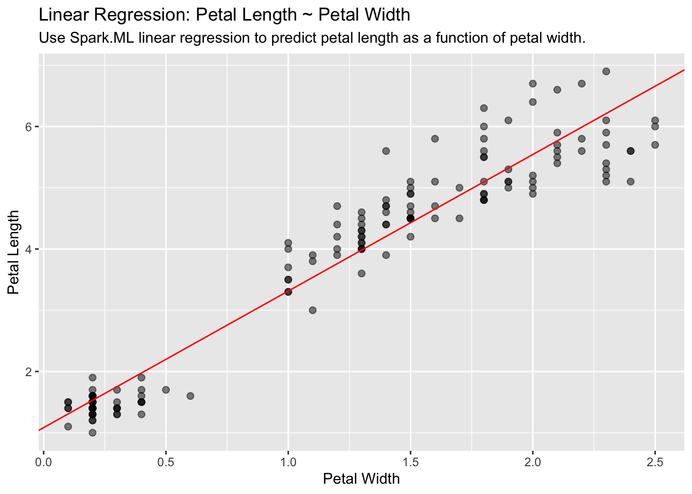

library(sparklyr)
library(ggplot2)
library(dplyr)
sc <- spark_connect(master = "local")
iris_tbl <- copy_to(sc, iris, "iris", overwrite = TRUE)
iris_tbl
#> # Source: spark<iris> [?? x 5]
#> Sepal_Length Sepal_Width Petal_Length Petal_Width Species
#> <dbl> <dbl> <dbl> <dbl> <chr>
#> 1 5.1 3.5 1.4 0.2 setosa
#> 2 4.9 3 1.4 0.2 setosa
#> 3 4.7 3.2 1.3 0.2 setosa
#> 4 4.6 3.1 1.5 0.2 setosa
#> 5 5 3.6 1.4 0.2 setosa
#> 6 5.4 3.9 1.7 0.4 setosa
#> 7 4.6 3.4 1.4 0.3 setosa
#> 8 5 3.4 1.5 0.2 setosa
#> 9 4.4 2.9 1.4 0.2 setosa
#> 10 4.9 3.1 1.5 0.1 setosa
#> # … with more rowsSpark Machine Learning Library (MLlib)
Overview
sparklyr provides bindings to Spark’s distributed machine learning library. In particular, sparklyr allows you to access the machine learning routines provided by the spark.ml package. Together with sparklyr’s dplyr interface, you can easily create and tune machine learning workflows on Spark, orchestrated entirely within R.
sparklyr provides three families of functions that you can use with Spark machine learning:
- Machine learning algorithms for analyzing data (
ml_*) - Feature transformers for manipulating individual features (
ft_*) - Functions for manipulating Spark DataFrames (
sdf_*)
An analytic workflow with sparklyr might be composed of the following stages. For an example see Example Workflow.
Perform SQL queries through the sparklyr dplyr interface
Use the
sdf_*andft_*family of functions to generate new columns, or partition your data setChoose an appropriate machine learning algorithm from the
ml_*family of functions to model your dataInspect the quality of your model fit, and use it to make predictions with new data.
Collect the results for visualization and further analysis in R
Algorithms
Spark’s machine learning library can be accessed from sparklyr through the ml_* set of functions. Visit the sparklyr reference page to see the complete list of available algorithms: Reference - Spark Machine Learning
Formulas
The ml_* functions take the arguments response and features. But features can also be a formula with main effects (it currently does not accept interaction terms). The intercept term can be omitted by using -1.
The following two statements are equivalent:
ml_linear_regression(z ~ -1 + x + y)ml_linear_regression(intercept = FALSE, response = "z", features = c("x", "y"))Options
The Spark model output can be modified with the ml_options argument in the ml_* functions. The ml_options is an experts only interface for tweaking the model output. For example, model.transform can be used to mutate the Spark model object before the fit is performed.
Transformers
A model is often fit not on a data set as-is, but instead on some transformation of that data set. Spark provides feature transformers, facilitating many common transformations of data within a Spark DataFrame, and sparklyr exposes these within the ft_* family of functions. These routines generally take one or more input columns, and generate a new output column formed as a transformation of those columns. Visit the sparklyr reference page to see the complete list of available transformers: Reference - Feature Transformers
Examples
We will use the iris data set to examine a handful of learning algorithms and transformers. The iris data set measures attributes for 150 flowers in 3 different species of iris.
K-Means Clustering
Use Spark’s K-means clustering to partition a dataset into groups. K-means clustering partitions points into k groups, such that the sum of squares from points to the assigned cluster centers is minimized.
kmeans_model <- iris_tbl %>%
ml_kmeans(k = 3, features = c("Petal_Length", "Petal_Width"))
kmeans_model
#> K-means clustering with 3 clusters
#>
#> Cluster centers:
#> Petal_Length Petal_Width
#> 1 5.626087 2.047826
#> 2 1.462000 0.246000
#> 3 4.292593 1.359259
#>
#> Within Set Sum of Squared Errors = not computed.Run and collect predictions into R:
predicted <- ml_predict(kmeans_model, iris_tbl) %>%
collect()
table(predicted$Species, predicted$prediction)
#>
#> 0 1 2
#> setosa 0 50 0
#> versicolor 2 0 48
#> virginica 44 0 6Use the collected data to plot the results:
predicted %>%
ggplot(aes(Petal_Length, Petal_Width)) +
geom_point(aes(Petal_Width, Petal_Length, col = factor(prediction + 1)),
size = 2, alpha = 0.5
) +
geom_point(
data = kmeans_model$centers, aes(Petal_Width, Petal_Length),
col = scales::muted(c("red", "green", "blue")),
pch = "x", size = 12
) +
scale_color_discrete(
name = "Predicted Cluster",
labels = paste("Cluster", 1:3)
) +
labs(
x = "Petal Length",
y = "Petal Width",
title = "K-Means Clustering",
subtitle = "Use Spark.ML to predict cluster membership with the iris dataset."
)
Linear Regression
Use Spark’s linear regression to model the linear relationship between a response variable and one or more explanatory variables.
lm_model <- iris_tbl %>%
ml_linear_regression(Petal_Length ~ Petal_Width)Extract the slope and the intercept into discrete R variables. We will use them to plot:
spark_slope <- coef(lm_model)[["Petal_Width"]]
spark_intercept <- coef(lm_model)[["(Intercept)"]]iris_tbl %>%
select(Petal_Width, Petal_Length) %>%
collect() %>%
ggplot(aes(Petal_Length, Petal_Width)) +
geom_point(aes(Petal_Width, Petal_Length), size = 2, alpha = 0.5) +
geom_abline(aes(
slope = spark_slope,
intercept = spark_intercept
),
color = "red"
) +
labs(
x = "Petal Width",
y = "Petal Length",
title = "Linear Regression: Petal Length ~ Petal Width",
subtitle = "Use Spark.ML linear regression to predict petal length as a function of petal width."
)
Logistic Regression
Use Spark’s logistic regression to perform logistic regression, modeling a binary outcome as a function of one or more explanatory variables.
glm_model <- iris_tbl %>%
mutate(is_setosa = ifelse(Species == "setosa", 1, 0)) %>%
select_if(is.numeric) %>%
ml_logistic_regression(is_setosa ~.)
summary(glm_model)
#> Coefficients:
#> (Intercept) Sepal_Length Sepal_Width Petal_Length Petal_Width
#> -0.02904898 -7.23312634 28.56334798 -9.02580864 -20.62238442ml_predict(glm_model, iris_tbl) %>%
count(Species, prediction)
#> # Source: spark<?> [?? x 3]
#> # Groups: Species
#> Species prediction n
#> <chr> <dbl> <dbl>
#> 1 virginica 0 50
#> 2 versicolor 0 50
#> 3 setosa 1 50PCA
Use Spark’s Principal Components Analysis (PCA) to perform dimensionality reduction. PCA is a statistical method to find a rotation such that the first coordinate has the largest variance possible, and each succeeding coordinate in turn has the largest variance possible.
pca_model <- tbl(sc, "iris") %>%
select(-Species) %>%
ml_pca()
pca_model
#> Explained variance:
#>
#> PC1 PC2 PC3 PC4
#> 0.924618723 0.053066483 0.017102610 0.005212184
#>
#> Rotation:
#> PC1 PC2 PC3 PC4
#> Sepal_Length -0.36138659 -0.65658877 0.58202985 0.3154872
#> Sepal_Width 0.08452251 -0.73016143 -0.59791083 -0.3197231
#> Petal_Length -0.85667061 0.17337266 -0.07623608 -0.4798390
#> Petal_Width -0.35828920 0.07548102 -0.54583143 0.7536574Random Forest
Use Spark’s Random Forest to perform regression or multiclass classification.
rf_model <- iris_tbl %>%
ml_random_forest(
Species ~ Petal_Length + Petal_Width, type = "classification"
)Use ml_predict() to use the apply the new model back to the data.
rf_predict <- ml_predict(rf_model, iris_tbl)
glimpse(rf_predict)
#> Rows: ??
#> Columns: 14
#> Database: spark_connection
#> $ Sepal_Length <dbl> 5.1, 4.9, 4.7, 4.6, 5.0, 5.…
#> $ Sepal_Width <dbl> 3.5, 3.0, 3.2, 3.1, 3.6, 3.…
#> $ Petal_Length <dbl> 1.4, 1.4, 1.3, 1.5, 1.4, 1.…
#> $ Petal_Width <dbl> 0.2, 0.2, 0.2, 0.2, 0.2, 0.…
#> $ Species <chr> "setosa", "setosa", "setosa…
#> $ features <list> <1.4, 0.2>, <1.4, 0.2>, <1…
#> $ label <dbl> 0, 0, 0, 0, 0, 0, 0, 0, 0, …
#> $ rawPrediction <list> <20, 0, 0>, <20, 0, 0>, <2…
#> $ probability <list> <1, 0, 0>, <1, 0, 0>, <1, …
#> $ prediction <dbl> 0, 0, 0, 0, 0, 0, 0, 0, 0, …
#> $ predicted_label <chr> "setosa", "setosa", "setosa…
#> $ probability_setosa <dbl> 1, 1, 1, 1, 1, 1, 1, 1, 1, …
#> $ probability_versicolor <dbl> 0, 0, 0, 0, 0, 0, 0, 0, 0, …
#> $ probability_virginica <dbl> 0, 0, 0, 0, 0, 0, 0, 0, 0, …To get an idea of the model effectiveness, use count() to compare species against the prediction. ml_predict() created a variable called predicted_label. That variable contains the string value of the prediction:
rf_predict %>%
count(Species, predicted_label)
#> # Source: spark<?> [?? x 3]
#> # Groups: Species
#> Species predicted_label n
#> <chr> <chr> <dbl>
#> 1 setosa setosa 50
#> 2 versicolor virginica 1
#> 3 virginica virginica 50
#> 4 versicolor versicolor 49FT String Indexing
Use ft_string_indexer() and ft_index_to_string() to convert a character column into a numeric column and back again.
ft_string2idx <- iris_tbl %>%
ft_string_indexer("Species", "Species_idx") %>%
ft_index_to_string("Species_idx", "Species_remap") %>%
select(Species, Species_remap, Species_idx)To see the value assigned to each value in Species, we can pull the aggregates of all the species, re-mapped species and index combinations:
ft_string2idx %>%
group_by_all() %>%
summarise(count = n(), .groups = "keep")
#> # Source: spark<?> [?? x 4]
#> # Groups: Species, Species_remap, Species_idx
#> Species Species_remap Species_idx count
#> <chr> <chr> <dbl> <dbl>
#> 1 setosa setosa 0 50
#> 2 versicolor versicolor 1 50
#> 3 virginica virginica 2 50SDF Partitioning
Split a Spark DataFrame into “training” and “test” datasets.
partitions <- iris_tbl %>%
sdf_random_split(training = 0.75, test = 0.25, seed = 1099)The partitions variable is now a list with two elements called training and test. It does not contain any data. It is just a pointer to where Spark has separated the data, so nothing is downloaded into R. Use partitions$training to access the data the Spark has separated for that purpose.
fit <- partitions$training %>%
ml_linear_regression(Petal_Length ~ Petal_Width)Use ml_predict() to then calculate the mse of the “test” data:
ml_predict(fit, partitions$test) %>%
mutate(resid = Petal_Length - prediction) %>%
summarize(mse = mean(resid ^ 2, na.rm = TRUE))
#> # Source: spark<?> [?? x 1]
#> mse
#> <dbl>
#> 1 0.212Disconnect from Spark
Lastly, cleanup your session by disconnecting Spark:
spark_disconnect(sc)